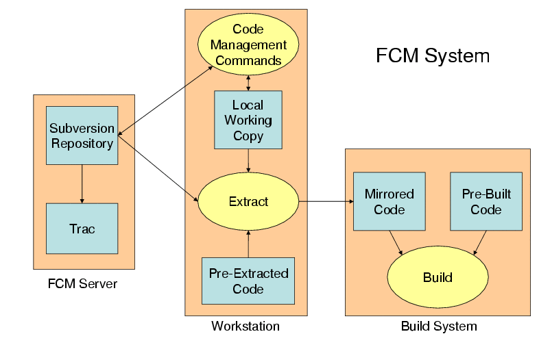

FCM System User Guide > System Overview
System Overview
The FCM system is designed to simplify the task of managing and building
source code. It consists of three main components.
- Code Management (CM) System
- This system provides facilities for making changes to source code in
a controlled and straightforward manner.
- Version control is provided by the open source tool
Subversion. The
source code and its history are stored in a central database which is
called the repository. Support for parallel working is provided through
the use of branches.
- The open source web-based tool
Trac allows changes to be examined and documented. It
provides an integrated issue tracker, wiki and repository browser.
- Build System
- This system allows source code to be compiled with a minimal amount
of configuration. Compilation time can be minimised through the use of
pre-compiled code and by using the parallel make facilities provided by
the open source tool GNU
Make.
- It provides a number of powerful features aimed primarily at building
Fortran 9x code.
- Extract System
- This system provides the interface between the CM and build systems.
Code is extracted and presented in a suitable form for the build system.
Code can be mirrored to a different build platform if necessary.
The diagram below illustrates how these components fit together.

The following sections discuss these components in more detail.
Code Management System
The CM system is built using a number of open source tools, in particular
Subversion and Trac.
Subversion is a modern version control tool with a large and
rapidly expanding user base. For a summary of its main features please refer
to chapter 1 of the book
Version Control
with Subversion.
Subversion is a generalised tool which can be used in lots of different
ways. This makes some day-to-day tasks more complex than they need be. FCM
defines a simplified process and appropriate naming conventions. It then adds
a layer on top of Subversion to provide a natural interface which is
specifically tailored to this process. Where appropriate it simply makes use of
the command line tools provided by Subversion. However, in other cases it
provides significant additional functionality, for example:
- By making some assumptions about the repository layout (i.e. by
imposing a standard working practise) FCM simplifies the task of
creating branches and enforces a standard branch naming convention.
- Having defined working practises and standard log messages allows FCM to
greatly simplify the process of merging changes between branches.
- FCM makes use of xxdiff
(a graphical merge tool) to simplify the process of resolving any conflicts
which result from a merge.
- Code changes can be examined in graphical form using xxdiff.
FCM also allows you to easily examine the changes made on a branch.
- FCM allows you to check where any particular branch has been used and
which version is being used.
FCM also provides a simple GUI which allows easy access to most of the
common commands which you will need.
Trac is the other main component of the CM system. It is a
powerful web based tool which helps you to manage your software project. It
includes the following features:
- A flexible issue tracker which can be used to keep track of bugs, feature
requests, etc. Each issue (known as a "ticket" within Trac) can be given a
priority and assigned to a particular person. Changes made to your Subversion
repository can easily be traced to the relevant ticket. Where appropriate,
tickets can be used to record information about who has reviewed each change.
- A roadmap feature which helps you to plan and manage project releases.
Each ticket can be associated with a particular milestone. Trac can then
easily show you what features or fixes went into a particular release or
what work remains before a particular milestone is reached.
- A "wiki" which can be used for project documentation.
- A browser for viewing your Subversion repository which allows you to
browse the project tree / files and examine revision logs and changesets.
- A timeline view which summarises all the activity on a project (changes
to the tickets, wiki pages or the Subversion repository).
Build System
The build system provides the following features:
- Automatic generation of Makefile's at build time based on a simple
configuration file.
- Full dependency analysis at build time.
- Automatic generation of Fortran 9x interface files at build time.
- Support for non-standard source code. You can override automatic
dependency and compile rules in order to deal with code which does not
conform to the necessary coding standards.
- Flexible control over compiler flags. Changes to compiler flags trigger
the appropriate re-compilation.
- Support for Pre-processor directives. Changes to Pre-processor flags
trigger the appropriate re-compilation.
- Support for pre-compiled object code to speed compilation time.
- GNU make is used to perform the build. Build times on
multi-processor systems can be reduced using parallel make.
Extract System
The extract system provides the following features:
- Extraction of code to a directory tree suitable for feeding into the
build system. Code can be combined from multiple repositories and branches.
Local user code can also be included.
- Either a complete set of source code may be extracted or just a set of
changes relative to pre-compiled code.
- A simple configuration file defines what code is required (and what
compile options are required). Typically, standard versions of these
configuration files are maintained within the repository. Users can then
define changes relative to these standard versions.
- If necessary, code can be transferred to a different platform ready for
building.